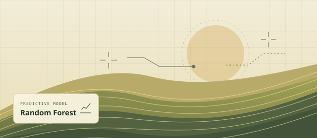

Applied machine learning01Crop Yield Prediction
Led an undergraduate machine-learning project that used Random Forest to estimate crop yield from agricultural data.
Explore case study
- Problem
- Estimate crop yield from historical agricultural records.
- My contribution
- Led the B.Tech project and used a Random Forest model for yield prediction.
- Evaluation approach
- MAE, RMSE and R² are suitable measures for this regression task. The original dataset and measured scores aren’t documented here.